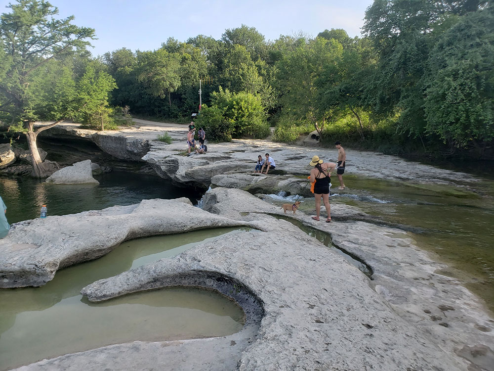
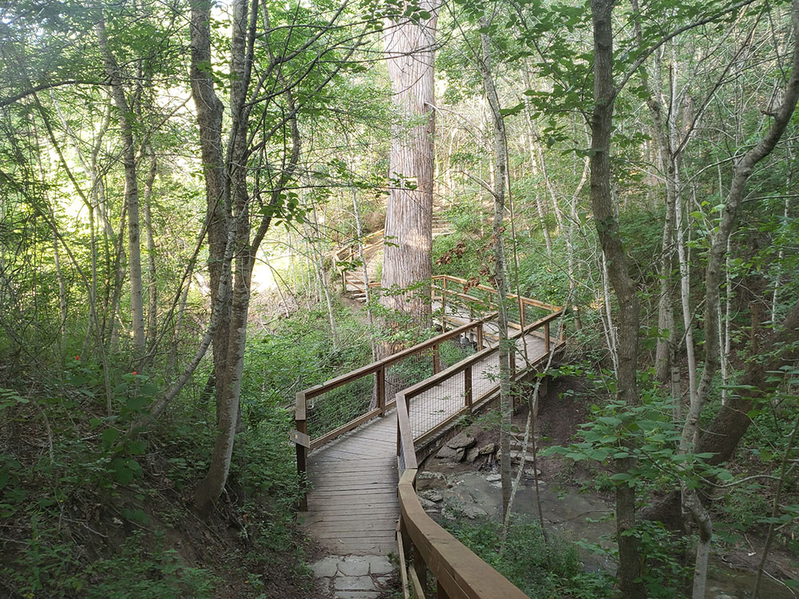
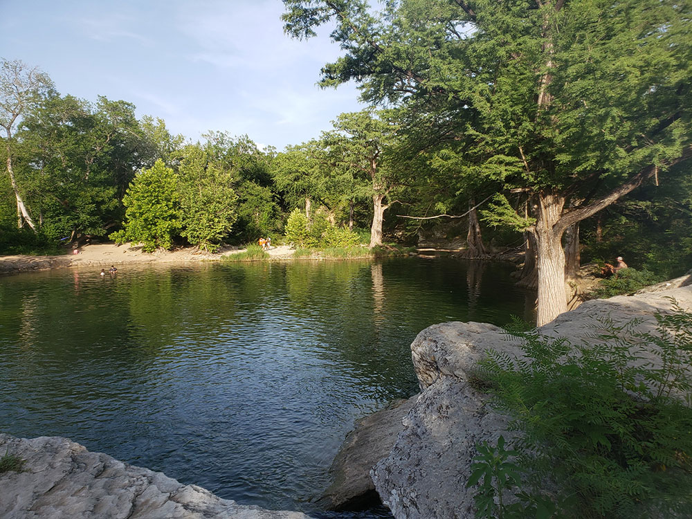
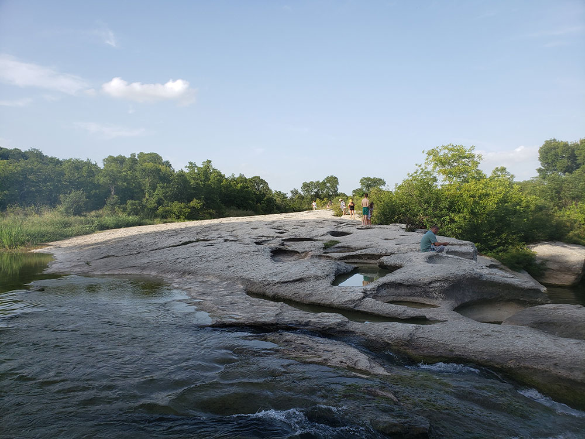
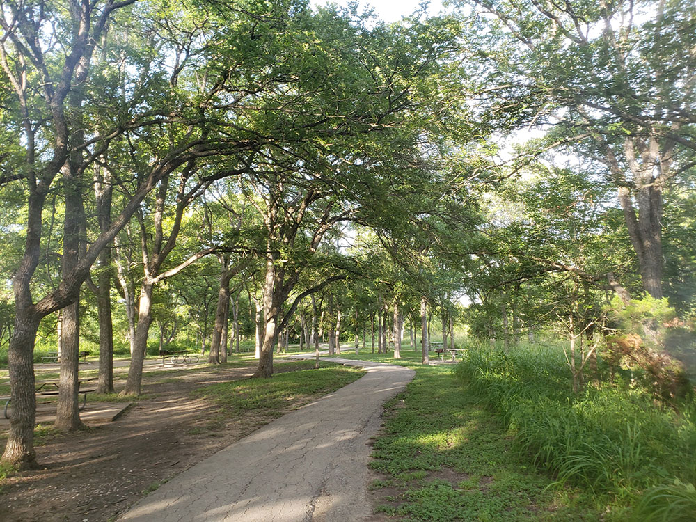
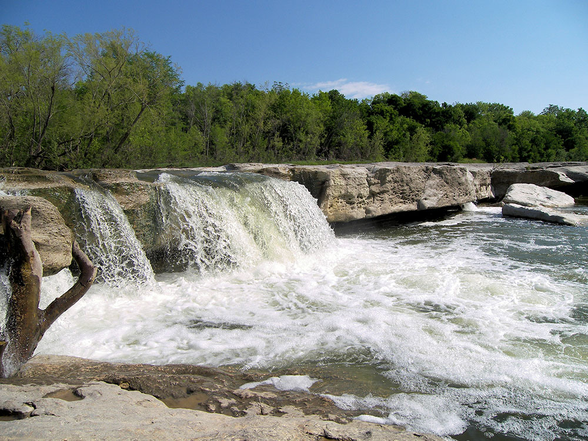
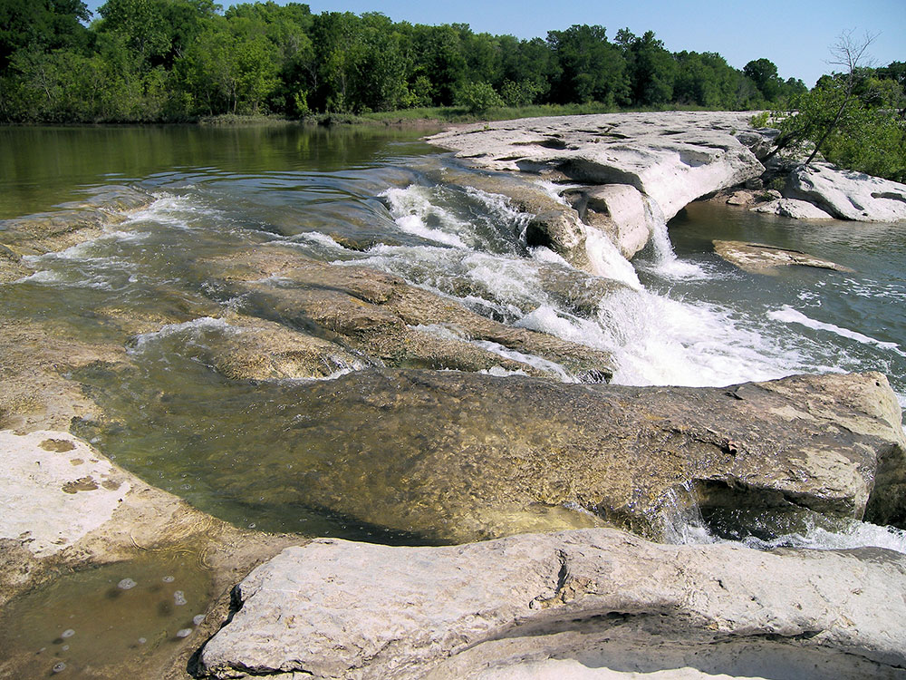

State park in Austin, at the confluence of Onion Creek and Williamson Creek, includes several hiking trails and the namesake features of the park, the scenic upper and lower falls along Onion Creek
General Information
Children 12 Years and Under: Free
Park often reaches capacity; reservations are highly recommended for both camping and day use. To guarantee entrance reserve passes online, or by calling the customer service center, before visit.
Take I-35 S, Exit 230, E Ben White Blvd, Burleson Rd and McKinney Falls Pkwy. Turn right.
Overview
McKinney Falls State Park is a Texas state park where Onion Creek meets Williamson Creek on Austin's southeast side, just off I-35 and a short drive from downtown. It is best known for its scenic upper and lower falls, natural swimming holes, and nearly nine miles of hiking and biking trails winding through Hill Country woodlands and creekside scenery. The park is named for Thomas F. McKinney, a 19th-century rancher and horse breeder who built a stone house, gristmill and horse trainer's cabin here in the mid-1800s, and it lies along the historic El Camino Real de los Tejas trail. Native Americans used the limestone Smith Rock Shelter long before, and both the rock shelter and the McKinney homestead ruins are listed on the National Register of Historic Places. The land was acquired for a state park and opened to the public in the 1970s, and it has become one of Austin's most popular places to swim, hike, bike and camp without leaving the city.
Access
The park is within Austin's city limits, roughly 13 miles southeast of downtown, and is reached by car in about 20 to 30 minutes depending on traffic. From I-35, take the Ben White Boulevard exit, then follow Burleson Road and McKinney Falls Parkway to the park entrance. Austin's Austin-Bergstrom International Airport is just a few miles away. The park often reaches capacity on warm weekends, so day-use and camping reservations are strongly recommended. Public transit does not directly serve the park.
Seasons
Spring is lovely, with bluebonnets and other wildflowers, comfortable hiking temperatures and strong flow over the falls after rain. Summers are very hot and humid, and swimming in Onion Creek is the main draw, although the pools can be crowded and creek flow may be low during dry spells. Fall is dry and mild and ideal for hiking and biking the full trail system. Winters are generally mild with occasional cold snaps, and weekday mornings in any season are the quietest. Heavy rains can raise Onion Creek quickly, closing the swimming areas and some low creek crossings, and flooding has damaged the park in the past.
Things to Do
Visit Upper and Lower McKinney Falls
See the park's signature waterfalls as Onion Creek flows over rugged limestone ledges, creating scenic cascades, swimming holes, and beautiful photo opportunities.
Swim in Onion Creek
Cool off in the creek's natural pools and enjoy one of Austin's favorite outdoor recreation spots.
Hike Nearly Nine Miles of Trails
Explore trails that wind through woodlands, creekside scenery, historic sites, and rocky Hill Country landscapes.
Bike Through the Park
Ride paved and natural-surface trails suitable for both casual cyclists and outdoor enthusiasts.
Visit the McKinney Homestead
Discover the remains of an early Texas homestead and learn about the area's historic settlement.
See the Historic Gristmill Ruins
Explore remnants of an old gristmill and other historic structures connected to the park's past.
Explore the Rock Shelter
Follow the Rock Shelter Trail to a prehistoric limestone overhang once used by early visitors to the area.
Visit the Visitor Center
Learn about the park's natural and cultural history, enjoy views of Upper Falls, and explore exhibits including the bat cave display.
Top Trails
Onion Creek Hike and Bike Trail
Distance: 2.8 miles
Difficulty: Easy
Highlights: Paved surface, creek views, wildlife viewing, access to Upper Falls, and family-friendly hiking and biking.
Rock Shelter Trail
Distance: 0.6 miles
Difficulty: Easy
Highlights: Ancient rock shelter, Onion Creek views, and the park's famous bald cypress tree known as “Old Baldy.”
Homestead Trail
Distance: 3.1 miles
Difficulty: Moderate
Highlights: McKinney Homestead ruins, gristmill remains, historic features, and creek crossings.
Flint Rock Loop Trail
Distance: 1.5 miles
Difficulty: Moderate
Highlights: Rocky terrain, hardwood forests, and a more secluded hiking experience.
Williamson Creek Overlook Trail
Distance: 1.1 miles
Difficulty: Moderate
Highlights: Scenic views of Williamson Creek and quiet natural surroundings.
Cactus Garden Trail
Distance: 0.5 miles
Difficulty: Moderate
Highlights: Large patches of prickly pear cactus and native Hill Country vegetation.
Visitor Centers
The park's visitor center is near the Upper Falls and is the best place to start. It has exhibits on the park's natural and cultural history, including a bat cave display, along with maps, trail information and staff who can advise on creek conditions. A view of the Upper Falls is available nearby, and the center is also where campers and day visitors can ask about park programs and conditions. Hours vary, so check with Texas Parks and Wildlife before you go.
Camping and Lodging
The park has a campground with tent and RV sites, and camping reservations are strongly recommended, especially in spring and fall. Check Texas Parks and Wildlife for current campsite types and any other overnight options. Because the park is inside Austin, hotels, motels and vacation rentals of every kind are close by in Austin, with many near the airport and along I-35. San Marcos and Bastrop are each roughly 30 to 45 minutes away and offer additional lodging, and Bastrop State Park offers camping and cabins within an hour's drive. Other Hill Country towns such as Dripping Springs and Lockhart are within about an hour.
Flora and Fauna
Bald cypress and pecan trees shade Onion Creek's banks, while live oak, ashe juniper, and mesquite cover the drier uplands. In spring, the park's roads and meadows fill with Texas bluebonnets and other wildflowers. White-tailed deer, armadillos, and Fox squirrels are common sights, and birdwatchers can spot painted buntings, greater roadrunners, and scissor-tailed flycatchers. Turtles and softshells inhabit the creeks, and hikers should stay alert for native snakes, including the western diamondback rattlesnake.
Visitor Highlights
| Feature | Description |
|---|---|
| Waterfalls | Upper and Lower McKinney Falls cascade over limestone ledges into natural swimming holes. |
| Trails | Nearly nine miles of hiking and biking trails through woodlands, creeksides, and rocky terrain. |
| Historic Sites | Smith Rock Shelter and the ruins of the McKinney homestead and gristmill. |
| Wildlife and Flora | Spring bluebonnets, white-tailed deer, and a wide variety of birdlife along the creeks. |
| Visitor Center | Exhibits on the park's natural and cultural history plus views of Upper Falls. |
Best Time to Visit
| Time | What to Expect |
|---|---|
| Spring | Bluebonnets and wildflowers in bloom alongside comfortable hiking temperatures. |
| Summer | Peak season for swimming in Onion Creek's pools; expect hot, humid weather and bigger crowds. |
| Fall | Cooler temperatures make for ideal conditions to hike or bike the full trail system. |
| Weekday Mornings | Quieter trails, easier parking, and better wildlife viewing than weekends. |
Why Visit McKinney Falls State Park?
- Cool off in Onion Creek's natural swimming holes and waterfalls.
- Hike or bike nearly nine miles of Hill Country trails.
- Explore history at Smith Rock Shelter and the McKinney homestead ruins.
- Spot wildlife and wildflowers, especially bluebonnets in spring.
- Escape the city without leaving Austin's city limits.
This article is based on publicly available information about McKinney Falls State Park, as well as material from the Wikipedia article "McKinney Falls State Park", used under the Creative Commons Attribution-Share-Alike License 3.0.







